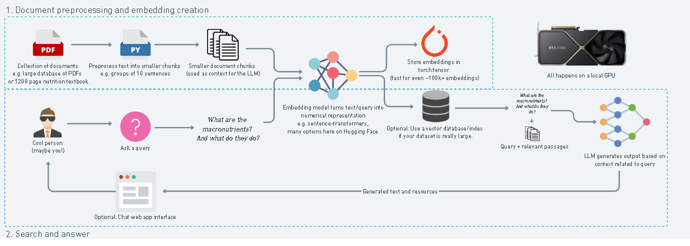
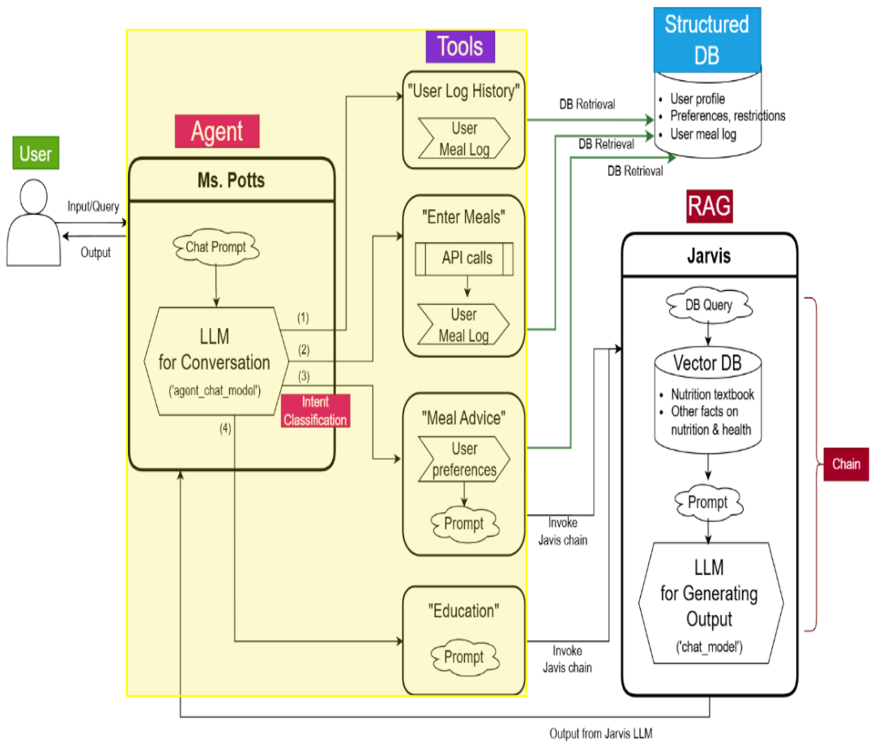

Section 2: RAG Architecture — Retrieval-Augmented Nutrition Intelligence
How do you turn a vague user query like “What’s a good post-workout snack for muscle gain?” into a precise, medically sound, and personalized recommendation?Used by companies like Anthropic (Constitutional AI), Meta (Galactica), and Uber for knowledge-grounded agents, RAG enhances generative AI by adding retrieval from domain-specific knowledge bases. NutriBot adapts this to nutrition science.
Answer: RAG — Retrieval-Augmented Generation.
What is RAG?
RAG combines two major components:
- Retriever: Fetches relevant information from an indexed knowledge base (e.g., nutrition textbooks, medical literature)
- Generator: Uses an LLM (via AWS Bedrock in our case) to synthesize answers grounded in that information
- Improves factuality
- Allows updates without fine-tuning
- Keeps cost low (lightweight vector DB, fewer large model calls)
NutriBot RAG Flow — Architecture Overview
We'll break this into two major layers:
- A. Retrieval Pipeline (Chunk → Embed → Index → Fetch)
- B. Generation Pipeline (Prompt → Bedrock LLM → Output)
We'll use these diagrams to guide us:
- Embedding Flow:

- End-to-End Architecture:

A. Document Ingestion, Chunking, Embedding, and Indexing
We preprocess nutrition PDFs into small chunks, convert each into embeddings, and index them using a vector database (e.g., ChromaDB for local prototyping or Pinecone/FAISS for scale).
Code Snippet: Chunking + Embedding Pipeline
from langchain.document_loaders import PyPDFLoader
from langchain.text_splitter import RecursiveCharacterTextSplitter
from sentence_transformers import SentenceTransformer
import chromadb
# 1. Load and split documents
loader = PyPDFLoader("Nutrition_Handbook.pdf")
documents = loader.load()
text_splitter = RecursiveCharacterTextSplitter(chunk_size=500, chunk_overlap=100)
chunks = text_splitter.split_documents(documents)
# 2. Create embeddings
embedder = SentenceTransformer("all-MiniLM-L6-v2")
texts = [chunk.page_content for chunk in chunks]
embeddings = embedder.encode(texts)
# 3. Index using ChromaDB
db = chromadb.Client()
collection = db.create_collection(name="nutribot_knowledge")
for i, text in enumerate(texts):
collection.add(documents=[text], embeddings=[embeddings[i]], ids=[f"doc_{i}"])
B. Query: Semantic Search + Grounded Generation
When the user sends a query like “Good post-meal for iron deficiency?”:
- It is embedded using the same model (all-MiniLM-L6-v2)
- Top-k relevant chunks are retrieved
- These chunks are passed as context into the LLM via a structured prompt
Code Snippet: Search + Prompt Construction
query = "What’s a good snack for iron deficiency?"
query_embedding = embedder.encode([query])[0]
# Semantic search
results = collection.query(query_embeddings=[query_embedding], n_results=3)
retrieved_docs = [doc['document'] for doc in results['documents']]
# Format context
context = "\n".join(retrieved_docs)
prompt = f"""You are a certified nutritionist.
Context: {context}
Question: {query}
Answer:"""
☁️ Powered by AWS Bedrock: Claude / Titan Integration
NutriBot uses Amazon Bedrock for LLM inference — meaning you get access to Claude (Anthropic) or Titan (Amazon) without managing models directly.
Why Bedrock?
| Feature | Benefit |
|---|---|
| Private API Gateway | No sensitive data leaves AWS network |
| Choice of Models | Claude (alignment) or Titan (Amazon native, faster for generation) |
| Cost Control | Pay-per-request, monitored via Billing API |
| Scalable Integration | Works directly with Lambda, API Gateway, and EC2 backends |
Deployment Cost Snapshot
| Component | Monthly Cost (Est.) | Description |
|---|---|---|
| EC2 Backend | $48.47 | App + embedding server |
| Bedrock Inference | (varies by usage) | LLM calls via Titan or Claude |
| Lambda (stateless) | $0.04 | Preprocessing + meal scoring |
| API Gateway | $0.04 | Routes frontend → backend |
| S3 / CloudFront | $0.05 | Doc storage + asset serving |
⚙️ This architecture is similar in cost-awareness and stateless scaling to Netflix’s recommender infra, where storage, retrieval, and ranking models operate asynchronously.
RAG Design Tradeoffs — Interview Notes
| Decision Point | NutriBot Approach | FAANG Parallel |
|---|---|---|
| Chunk size / overlap | 500 chars / 100 overlap for higher coherence | Uber AI Search |
| Embedding model | MiniLM-L6-v2 (efficient, open-source) | Netflix Offline Embeddings |
| Retrieval system | ChromaDB (MVP) → Pinecone (scale) | Anthropic Constitutional RAG |
| Generator | Bedrock Claude (factual + privacy-compliant) | Claude at Anthropic |
| Infra | Lambda + Bedrock + EC2 mix | Netflix Lambda-Rank Architecture |
Key Takeaways
- NutriBot’s RAG system uses a chunk-embed-retrieve pipeline backed by ChromaDB and Bedrock-hosted LLMs.
- Retrieval improves factual accuracy and reduces hallucination in dietary advice.
- The design is modular, stateless, and cost-efficient — directly inspired by how large-scale systems like Netflix and Uber handle retrieval, personalization, and response generation.